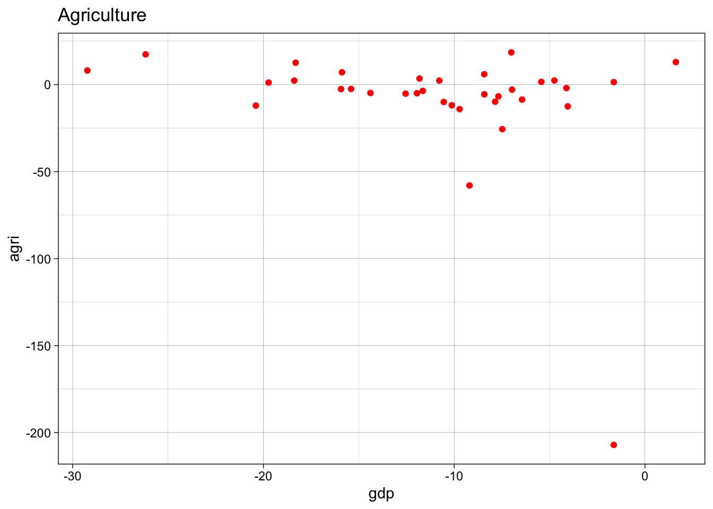
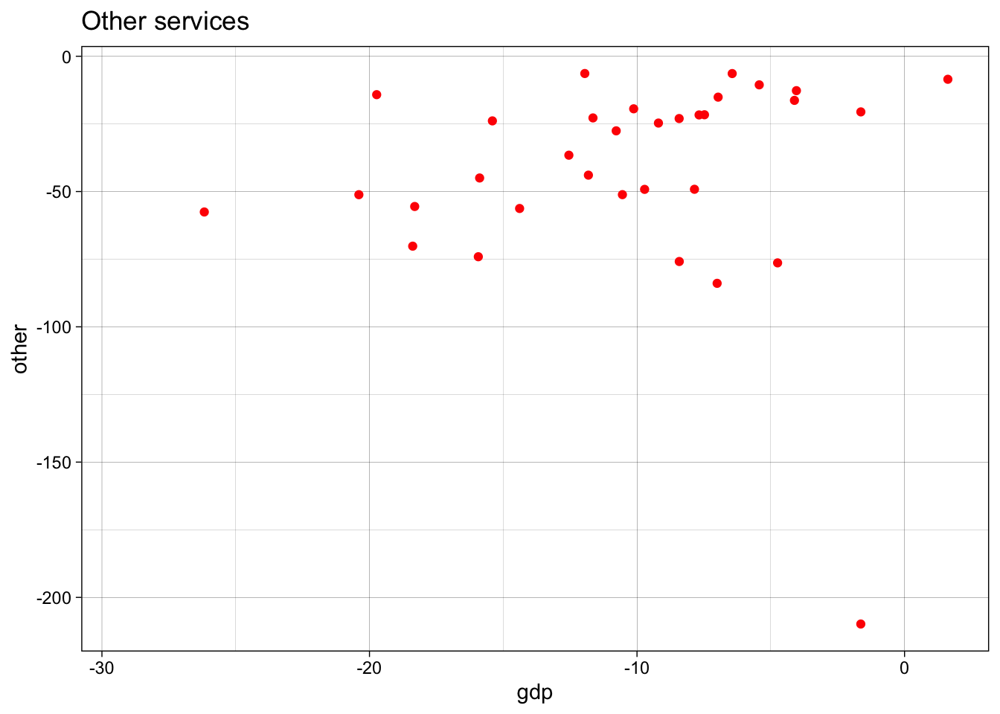
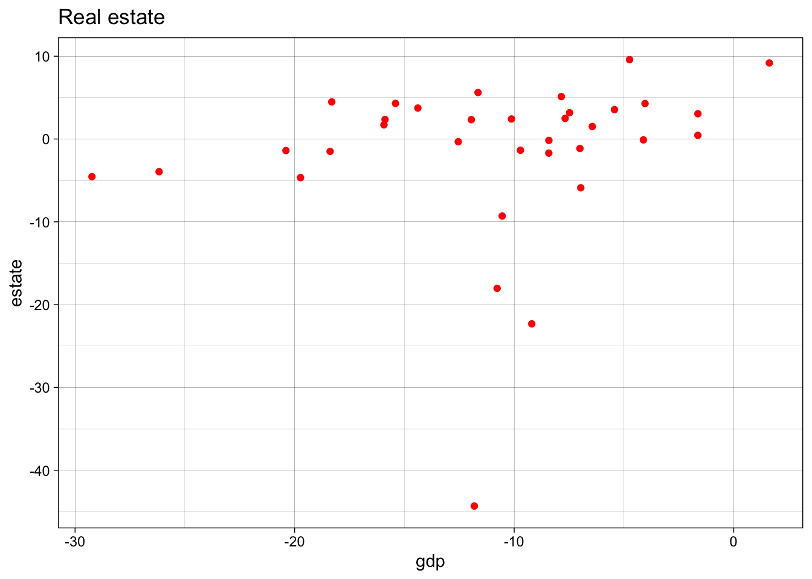
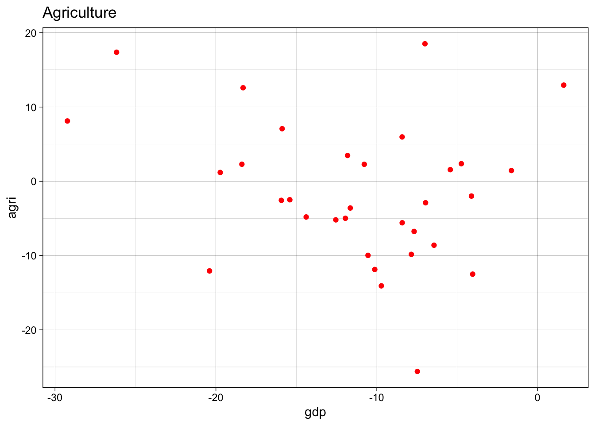
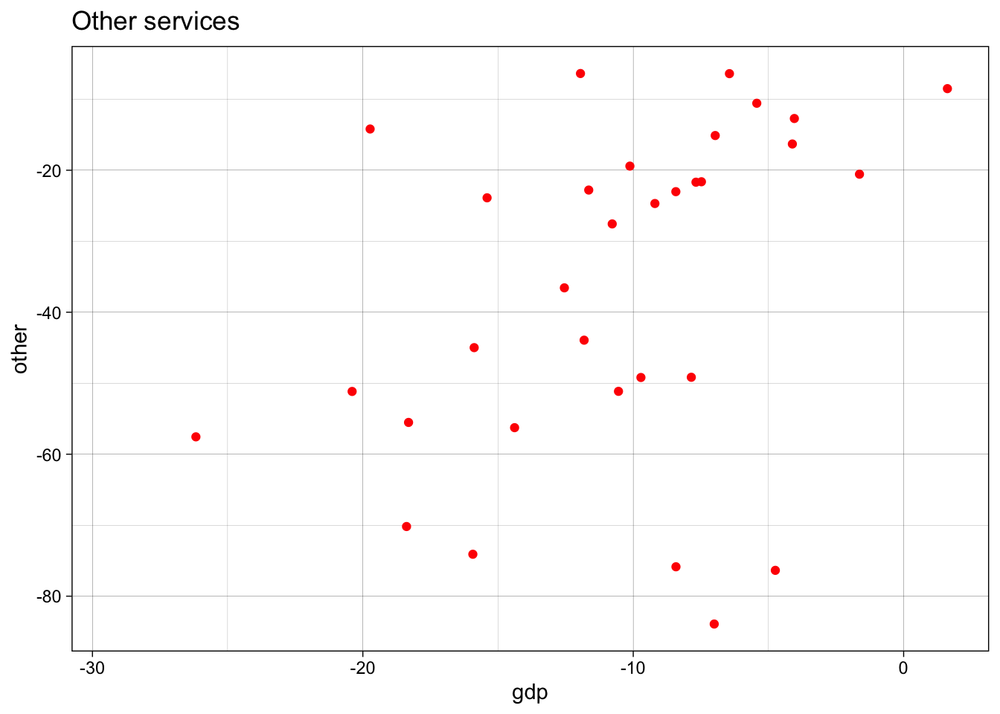
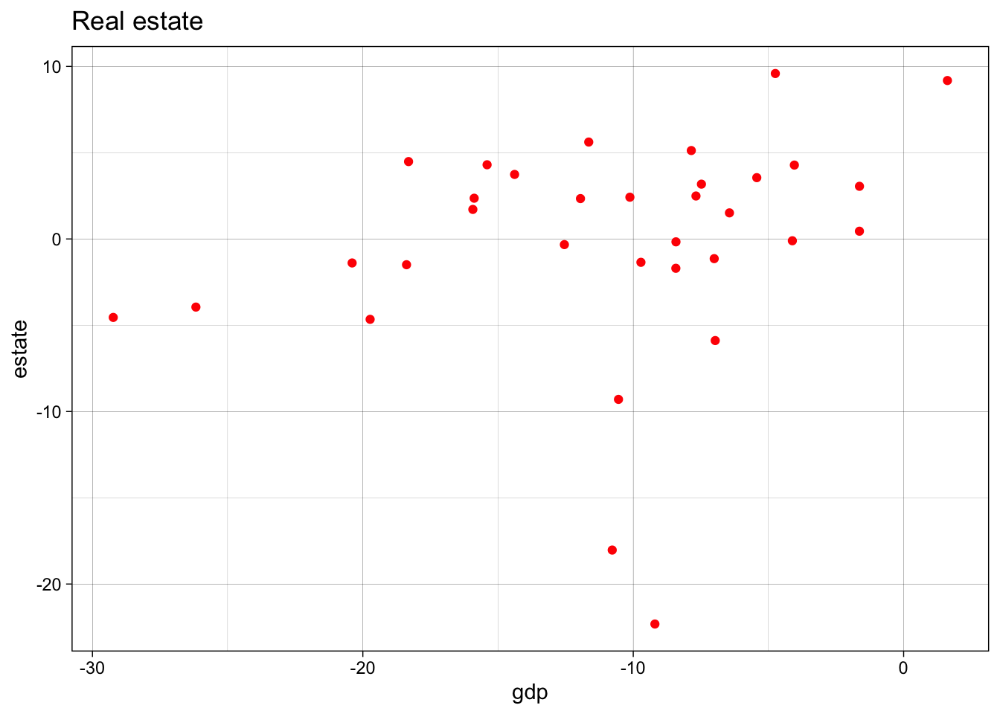
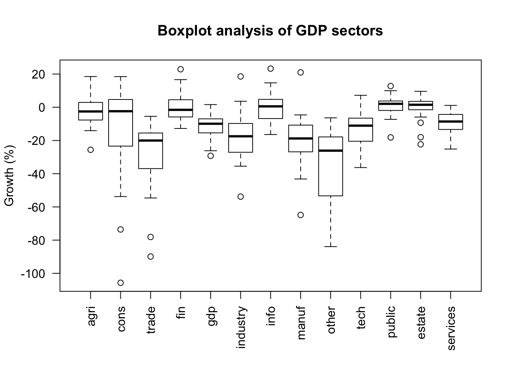

A simple OLS regression is run in order to evaluate how well our sample of country explains Morocco’s 2020 Q2 GDP growth.
Breaking down GDP into 12 contributing sub-sectors by country, we regress the average value of these sectors first onto GDP to see how well the model fits overall.
The following countries are included in our estimation:
## [1] "Austria" "Belgium" "Bulgaria" "Colombia"
## [5] "Costa Rica" "Czechia" "Denmark" "Estonia"
## [9] "Finland" "France" "Germany" "Greece"
## [13] "Hungary" "India" "Ireland" "Italy"
## [17] "Latvia" "Lithuania" "Luxembourg" "Netherlands"
## [21] "Norway" "Poland" "Portugal" "Romania"
## [25] "Slovakia" "Slovenia" "South Korea" "Spain"
## [29] "Sweden" "Switzerland" "Tunisia" "Turkey"
## [33] "Ukraine" "United Kingdom"With the following sectors:
## [1] "Agriculture, forestry and fishing (ISIC Rev.4)"
## [2] "Construction (ISIC Rev.4)"
## [3] "Distrib. trade, repairs; transp.; accommod., food serv. activ. (ISIC Rev.4)"
## [4] "Financial and insurance activities (ISIC Rev.4)"
## [5] "Gross domestic product at market prices - output approach"
## [6] "Gross value added at basic prices, total activity"
## [7] "Industry, including energy (ISIC Rev.4)"
## [8] "Information and communication (ISIC Rev.4)"
## [9] "of which: Manufacturing (ISIC Rev.4)"
## [10] "Other service activities (ISIC Rev.4)"
## [11] "Prof., scientif., techn. activ.; admin., support service activ.(ISIC Rev.4)"
## [12] "Public admin.; compulsory s.s.; education; human health (ISIC Rev.4)"
## [13] "Real estate activities (ISIC Rev.4)"
## [14] "Services (ISIC Rev.4)"
## [15] "Subsidies on products"
## [16] "Taxes less subsidies on products"
## [17] "Taxes on products"Take a glimpse at the data structure and the sectors we will be using in the model, the values are the percentage change from Q2 2019 to Q2 2020:
## # A tibble: 6 x 14
## country agri cons trade fin gdp industry info manuf other tech
## <chr> <dbl> <dbl> <dbl> <dbl> <dbl> <dbl> <dbl> <dbl> <dbl> <dbl>
## 1 Austria -2.49 -6.35 -36.4 -2.51 -15.4 -21.7 -2.20 -25.2 -23.9 -36.3
## 2 Belgium 7.08 -17.9 -32.1 -7.44 -15.9 -17.6 -5.49 -18.2 -45.0 -18.2
## 3 Bulgar… -2.89 9.36 -35.2 -10.2 -6.97 3.61 9.61 -5.52 -15.1 2.89
## 4 Colomb… 12.6 -40.3 -46.6 1.46 -18.3 -35.5 -7.46 -27.5 -55.5 -8.22
## 5 Costa … -4.98 0.245 -42.6 -5.53 -12.0 -16.0 2.83 -19.9 -6.38 -1.24
## 6 Czechia -6.75 2.78 -19.5 -8.56 -7.68 -14.8 4.80 -17.9 -21.7 -3.05
## # … with 3 more variables: public <dbl>, estate <dbl>, services <dbl>The first regression is the full set of countries, excluding Morocco, the main focus of this estimation. We also drop Egypt due to errors in matching quarters, but would like to keep it aside in case we would like to evaluate robustness through its inclusion.
full.set<-lm(gdp ~ agri + cons + trade + fin + industry + info + manuf + other + tech + public + estate + services, data=tot.wide)
summary(full.set)##
## Call:
## lm(formula = gdp ~ agri + cons + trade + fin + industry + info +
## manuf + other + tech + public + estate + services, data = tot.wide)
##
## Residuals:
## Min 1Q Median 3Q Max
## -2.16780 -0.33209 0.02167 0.46888 2.16933
##
## Coefficients:
## Estimate Std. Error t value Pr(>|t|)
## (Intercept) -1.077751 0.798769 -1.349 0.192330
## agri 0.009737 0.011375 0.856 0.402120
## cons -0.027547 0.016780 -1.642 0.116297
## trade 0.087425 0.047924 1.824 0.083093 .
## fin 0.145743 0.034768 4.192 0.000449 ***
## industry 0.287506 0.050530 5.690 1.44e-05 ***
## info 0.174891 0.045401 3.852 0.000994 ***
## manuf -0.007683 0.039043 -0.197 0.845975
## other -0.014737 0.010192 -1.446 0.163678
## tech 0.003927 0.034165 0.115 0.909642
## public -0.091518 0.073815 -1.240 0.229385
## estate 0.030948 0.037415 0.827 0.417909
## services 0.340527 0.189296 1.799 0.087142 .
## ---
## Signif. codes: 0 '***' 0.001 '**' 0.01 '*' 0.05 '.' 0.1 ' ' 1
##
## Residual standard error: 1.193 on 20 degrees of freedom
## (1 observation deleted due to missingness)
## Multiple R-squared: 0.9759, Adjusted R-squared: 0.9614
## F-statistic: 67.49 on 12 and 20 DF, p-value: 1.777e-13It is useful to note that the R-squared is very high so our model does fit the data well. But the relationship between sectors is only weakly significant, though this is not extremely important in prediction. In any case, this could be influenced by the outliers that we noted in our original GDP structure analysis. So after conducting a more thorough outlier analysis, we will evaluate how their removal improves the model.
We next run a first test of the model’s predictive ability with Morocco. The model produces a fitted value of -13.34% predicted for Morocco’s GDP growth with a RMSE of 8.4. When compared to Morocco’s observed GDP contraction of 9.3424 this is close but could be improved.
train.mar.1<-lm(gdp ~ agri + trade + fin + manuf + other + tech + public + services, data=tot.wide)
pred.mar1<-predict(train.mar.1, newdata = mar.gdp, interval = "prediction")
rmse(mar.gdp$gdp,pred.mar1)## [1] 8.443227We run some quick plots to evaluate linearity and check those with high standard deviations to decide which values to drop.

Given the bunching in Agriculture which is the result of a far outlying value in Ireland, we remove that observation and another one from Estonia. We also remove the outlier in Other Services (Ireland again) and a final one in Estate.
We can see that this has led to a more linear shape, meaning better estimates can be made from the data.

We run a final assessment through boxplots and feel the rest are representative of the sample.

The model has improved slightly for GDP with a higher R-squared and more significant variables. Now we can see how well it predicts GDP for Morocco. We use only the sectors that are found in the data we have for Morocco, build the model with them and run the training set. Next we add in Morocco as the validation set to see how well this model predicts GDP using the coefficients from the model.
train.mar.2<-lm(gdp ~ agri + trade + fin + manuf + other + tech + public + services, data=tot.wide)
pred.mar.2<-predict(train.mar.2, newdata = mar.gdp, interval = "prediction")
summary(pred.mar.2)## fit lwr upr
## Min. :-11.33 Min. :-19.5 Min. :-3.161
## 1st Qu.:-11.33 1st Qu.:-19.5 1st Qu.:-3.161
## Median :-11.33 Median :-19.5 Median :-3.161
## Mean :-11.33 Mean :-19.5 Mean :-3.161
## 3rd Qu.:-11.33 3rd Qu.:-19.5 3rd Qu.:-3.161
## Max. :-11.33 Max. :-19.5 Max. :-3.161The fitted value shows that this model predicts Morocco’s GDP to be at -11.32872.
This is not far from the actual observed value of -9.3424. This could mean that this model does a decent job of representing Covid’s impact by sector and could be applied to other applications in the future, including making inferences on the impact C19 has had on employment.
When checking the RMSE of the model, we find it lower than the full set, confirming that removing the outliers improved our model.
## [1] 6.958245We run this for several more countries, a mix between our developing sample and OECD countries with more average and “extreme” GDP impacts. We also include Ireland because it includes several removed values that were considered outliers and would like to see how this effects prediction for this value.
| Country | Predicted value | Observed value |
|---|---|---|
| Ireland | -5.889 | -1.635 |
| Tunisia | -14.040 | -11.816 |
| France | -20.08 | -18.384 |
| Switzerland | -10.49 | -10.777 |
| Spain | -25.58 | -26.173 |
Seeing that this model predicts close to the observed GDP impact, we can use it to extrapolate impact on the labour market in Morocco.